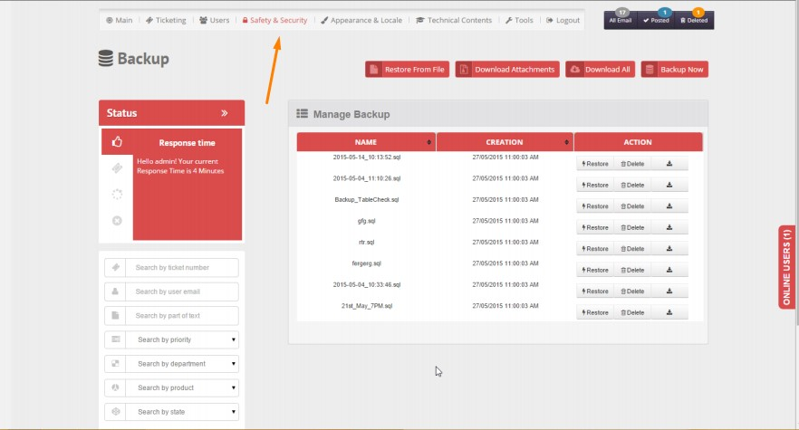
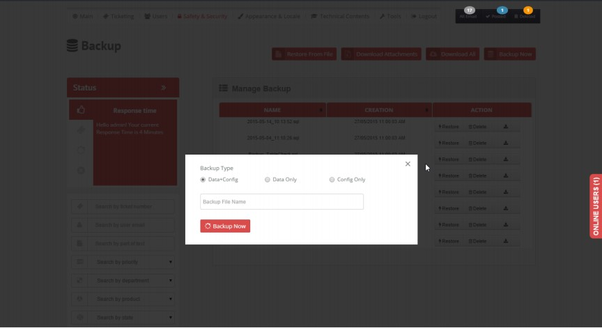
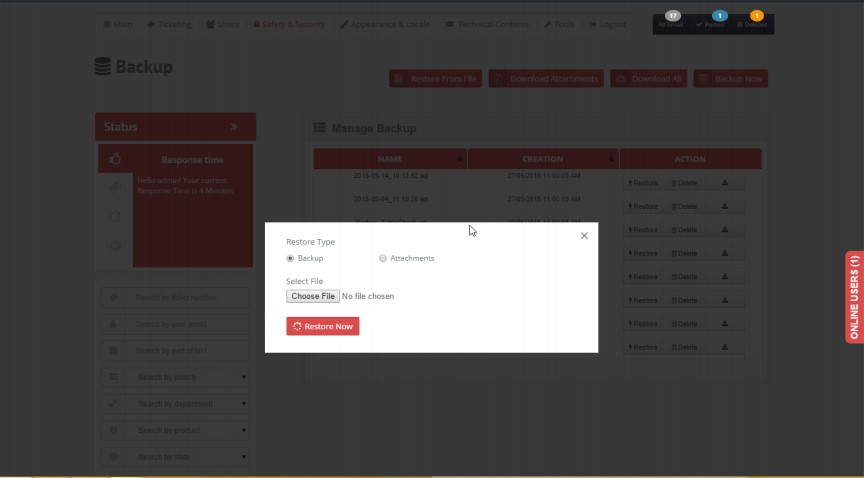

Are you worried about your customers messages and what accidents may happen to your server. Do not worry, B1ST allows you to generate backup of your messages database, as many as you wish to, with a push of a button.
- Select Backup from Safety & Security menu. Manage Backup page is opened with existing backup file list if any along with the creation date when the backup was taken.

- Click on the "Restore" button, to restore all the data backup earlier.
[ CAUTION ] : All current data will be lost if backup is restored.
- Click on the "delete" button, to delete the backup.
- Click on the "download" button, to download the SQL file as zip to the local computer. Later it can be used to restore again.
- Click on Backup Now button a pop up will appear from there backup of the whole data of the TS can be taken based on the selected Backup Type option.
- Data+Config : backup the whole data in database as well as config settings
- Data Only : backup only the data and the settings.
- Config Only : backup only the settings and not the data.
After selecting the required options click on the Backup now button to create a backup image of the TS.It will be displayed in the list of backup in manage backup page.

- Click on Download all to download a zip of all the backup in the backup lists.
The zip backup can be restored again later.
- Click on the Download Attachments to download a zip of all the attachment in TS. The zip can be uploaded again to restore the all the attachments.
- Click on Restore from File , a pop up will appear. Select restore, then select a zip backup taken earlier by download / Download All or Download Attachment. After selecting click on the Restore Now button to restore the backup all files will be listed in the manage backup page.

Created with the Personal Edition of HelpNDoc: Free CHM Help documentation generator